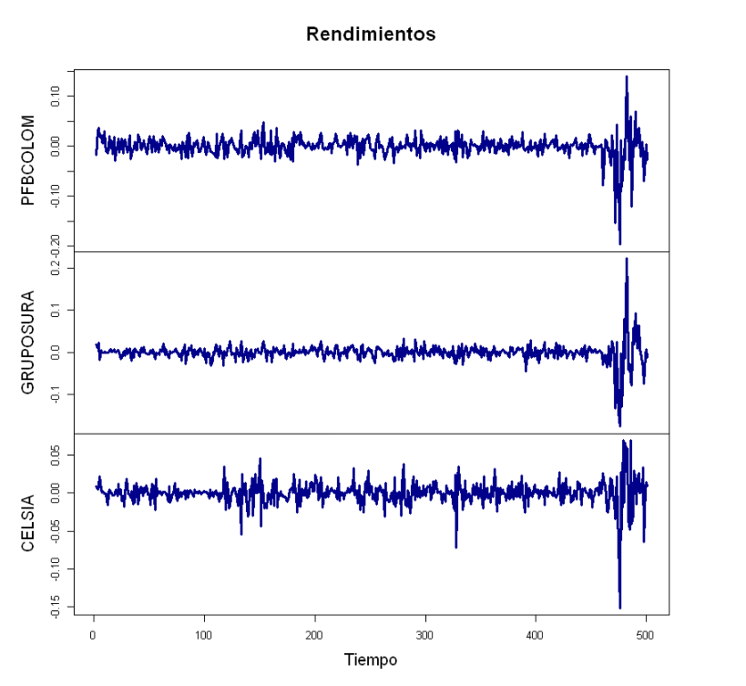

Ejercicios: VaR Delta-Normal¶
Para el siguiente portafolio de inversión escriba el código en R para responder los ejercicios.
Valor de mercado portafolio de inversión: Dos mil millones de pesos.¶
Utilizar el archivo: Tres acciones 2020.csv.¶
Ejercicios¶
1. Valor de mercado de las acciones.¶
Respuesta:
PFBCOLOM: $600.000.000.
GRUPOSURA: $900.000.000.
CELSIA: $500.000.000.
2. Rendimiento esperado de cada acción.¶
Respuesta:
PFBCOLOM: -0,000414968788186442 diario
GRUPOSURA: -0,00107596325774145 diario
CELSIA: -7,97826580546044e-05 diario
3. Volatilidad de cada acción.¶
Respuesta:
PFBCOLOM: 0.021927313918065 diaria
GRUPOSURA: 0.0233817070399678 diaria
CELSIA: 0.0164997698216524 diaria
4. Coeficiente de correlación.¶
Respuesta:
\(\rho_{PFBCOLOM,GRUPOSURA}=0,7009251\)
\(\rho_{PFBCOLOM,CELSIA}=0,4294552\)
\(\rho_{GRUPOSURA,CELSIA}=0,4220854\)
8. Gráfico: rendimientos de las acciones.¶

10. Gráfico: histograma de los rendimientos de las acciones y distribución normal con frecuencia diaria (\(\mu\neq 0\)).¶
3¶
11. Gráfico: histograma de los rendimientos del portafolio de inversión y distribución normal con frecuencia diaria (\(\mu\neq 0\)).¶
4¶
13. VaR individuales (sin promedios) diario con un nivel de confianza del 95%.¶
Respuesta:
PFBCOLOM: 0,0510105601167167
GRUPOSURA: 0,0543939844638748
CELSIA: 0,0383842044467643
PFBCOLOM: $30.606.336,07003
GRUPOSURA: $48.954.586,0174873
CELSIA: $19.192.102,2233821
14. VaR portafolio de inversión (sin promedios) diario con un nivel de confianza del 95%.¶
Respuesta:
$VaR_P: $ $84.259.803,4087885.
$VaR_P: $ 0,0421299017043943.
15. BD del método VaR (sin promedios) diario con un nivel de confianza del 95%.¶
Respuesta:
BD: $14.493.220,9021109.
17. VaR individuales (con promedios) semanal con un nivel de confianza del 99%.¶
Respuestas:
PFBCOLOM: 0,11613792393225.
GRUPOSURA: 0,127008463116999.
CELSIA: 0,0862286036954877.
PFBCOLOM: $69.682.754,3593502.
GRUPOSURA: $114.307.616,805299.
CELSIA: $43.114.301,8477439.
18. VaR portafolio de inversión (con promedios) semanal con un nivel de confianza del 99%.¶
Respuesta:
$VaR_P: $ $194.133.051,394595.
$VaR_P: $ 0,0970665256972973.
19. BD del método VaR (con promedios) semanal con un nivel de confianza del 99%.¶
Respuesta:
BD: $32.971.621,6177982.